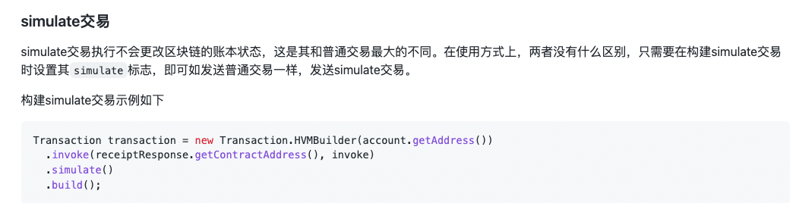

Simulate交易使用手册¶
1. 引言¶
1.1 编写目的¶
提供Simulate交易的使用方式
1.2背景¶
在与区块链平台交互的业务场景中，区块链作为业务数据存储平台，常会接收到数据查询的用户请求， 但当前区块链平台对于用户的一些数据查询请求，会当作一笔“真实的业务数据”存在链上，这个是没有必要，会导致链上存储多余的无用信息，进而影响平台数据的读写效率 。为解决上述痛点问题，我们拟采取“模拟交易”的方式，提供一个与真实环境分离的镜像模拟环境给用户进行数据读写的模拟查询，其数据变更和行为记录不会存在真实的底层数据库，从而做到“ 模拟数据不上链，提升数据查询效率 ”。
1.3术语¶
英文 |
中文 |
含义 |
|---|---|---|
Simulate Transaction |
模拟交易 |
只用于查询，不改变链上数据状态的交易。 |
1.4参考文献¶
2. 安装和初始化¶
只需要运行Flato v1.0.4以上的版本即支持simulate交易。
3.操作说明¶
simulate交易是为了方便用户使用区块链平台模拟执行交易提供的接口，simulate交易遵循即用即销毁的原则，在执行完成simulate交易之后，节点上不会存在任何关于该笔交易的痕迹，包括交易修改的状态、交易的哈希值等等。具体的，simulate交易支持如下几种类型的调用：
模拟部署合约；
模拟调用合约；
模拟维护合约（升级、冻结、解冻）。
需要注意的是，simulate交易 不支持如下几种 类型的调用：
普通转账交易/存证交易，因为simulate是模拟交易，因此不支持转账操作。其次，simulate执行完后即销毁，因此存证请求不会在链上留痕，也就失去了意义；
bvm合约调用，由于bvm合约大都涉及到的是管理员权限的合约操作，因此需要由管理员进行谨慎操作，simulate交易不支持此类调用
大文件存储调用，同样的，大文件存储面向的存储请求，但是simulate交易不会在链上留痕，也就无需支持大文件存储调用了。
simulate合约服务接口概览表
RPC方法 |
功能 |
|---|---|
simulate_deployContract |
部署合约 |
simulate _invokeContract |
调用合约 |
simulate _maintainContract |
升级合约、冻结合约、解冻合约 |
由于simulate交易调用流程与普通交易类似，因此发送simulate交易请求是可以参照《GoSDK/LiteSDK使用文档》将普通交易设置为simulate交易类型即可。
例（GoSDK设置交易类型为simulate）：
方法签名:
fun (t*Transaction) Simulate(simulate bool) *Transaction
例（LiteSDK设置交易类型为simulate）：

3.1 模拟部署合约¶
调用流程：模拟部署合约的流程可以参照GoSDK/LiteSDK的正常部署合约流程，并且将发起的交易设置为simulate交易类型即可（设置方式参照上述操作说明）。
模拟部署合约的调用操作结束后，该合约不会记录到链上。
3.2 模拟调用合约¶
说明：模拟调用合约之前，需要通过正常部署合约的方式先部署一个合约，随后才能通过模拟调用的方式调用该合约。即如果前序步骤是通过模拟部署合约的方式部署了一个合约的话，是不能通过模拟调用的方式调用该合约的，因为模拟部署合约的信息不会在链上留痕。
调用流程：模拟调用合约的流程可以参照GoSDK/LiteSDK的正常调用合约流程，并且将发起的交易设置为simulate交易类型即可（设置方式参照上述操作说明）。
模拟调用合约的调用操作结束后，合约状态的修改不会记录到链上，即模拟调用不影响链上合约的状态。
3.3 模拟升级合约¶
说明：只有合约的部署者才拥有模拟升级合约的权限。模拟升级合约之前，需要通过正常部署合约的方式先部署一个合约，随后才能通过模拟升级的方式升级该合约。即如果前序步骤是通过模拟部署合约的方式部署了一个合约的话，是不能通过模拟升级的方式升级该合约的。
调用流程：模拟升级合约的流程可以参照GoSDK/LiteSDK的正常升级合约流程，并且将发起的交易设置为simulate交易类型即可（设置方式参照上述操作说明）。
模拟升级合约的调用操作结束后，合约状态的修改不会记录到链上，即模拟升级不影响链上合约的状态。
3.4 模拟冻结合约¶
说明：只有合约的部署者才拥有模拟冻结合约的权限。模拟冻结合约之前，需要通过正常部署合约的方式先部署一个合约，随后才能通过模拟冻结的方式冻结该合约。即如果前序步骤是通过模拟部署合约的方式部署了一个合约的话，是不能通过模拟冻结的方式冻结该合约的。
调用流程：模拟冻结合约的流程可以参照GoSDK/LiteSDK的正常冻结合约流程，并且将发起的交易设置为simulate交易类型即可（设置方式参照上述操作说明）。
模拟冻结合约的调用操作结束后，合约状态的修改不会记录到链上，即模拟冻结不影响链上合约的状态。
3.5 模拟解冻合约¶
说明：只有合约的部署者才拥有模拟解冻合约的权限。模拟解冻合约之前，需要通过正常部署合约的方式先部署一个合约，并通过正常冻结合约的方式将其冻结，随后才能通过模拟解冻的方式解冻该合约。即如果前序步骤是通过模拟部署合约的方式部署了一个合约的话，或者前序步骤是通过模拟冻结合约的方式冻结了该合约的话，是不能通过模拟解冻的方式解冻该合约的。
调用流程：模拟解冻合约的流程可以参照GoSDK/LiteSDK的正常解冻合约流程，并且将发起的交易设置为simulate交易类型即可（设置方式参照上述操作说明）。
模拟解冻合约的调用操作结束后，合约状态的修改不会记录到链上，即模拟解冻不影响链上合约的状态。